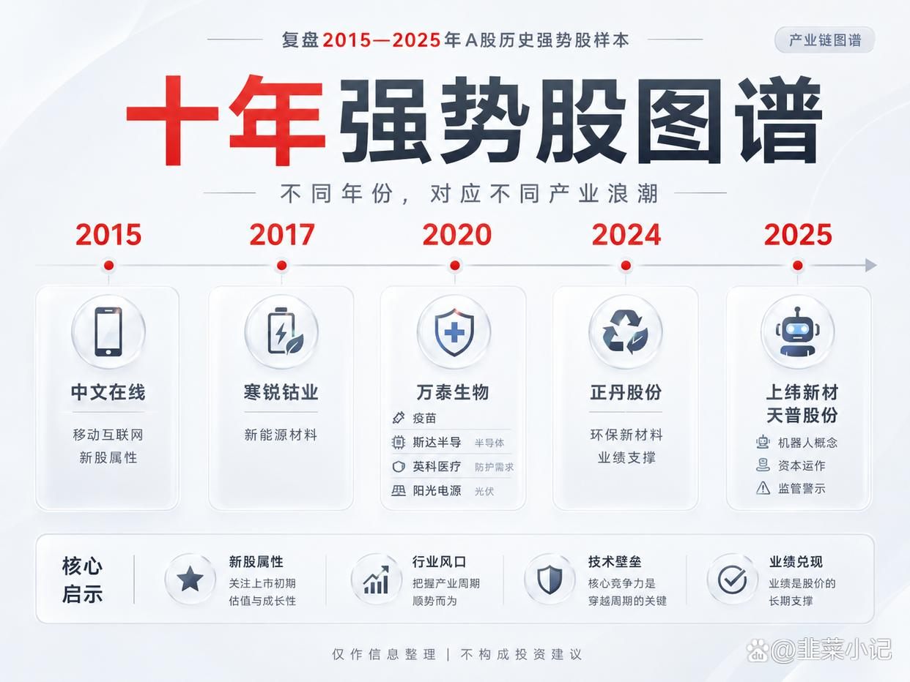
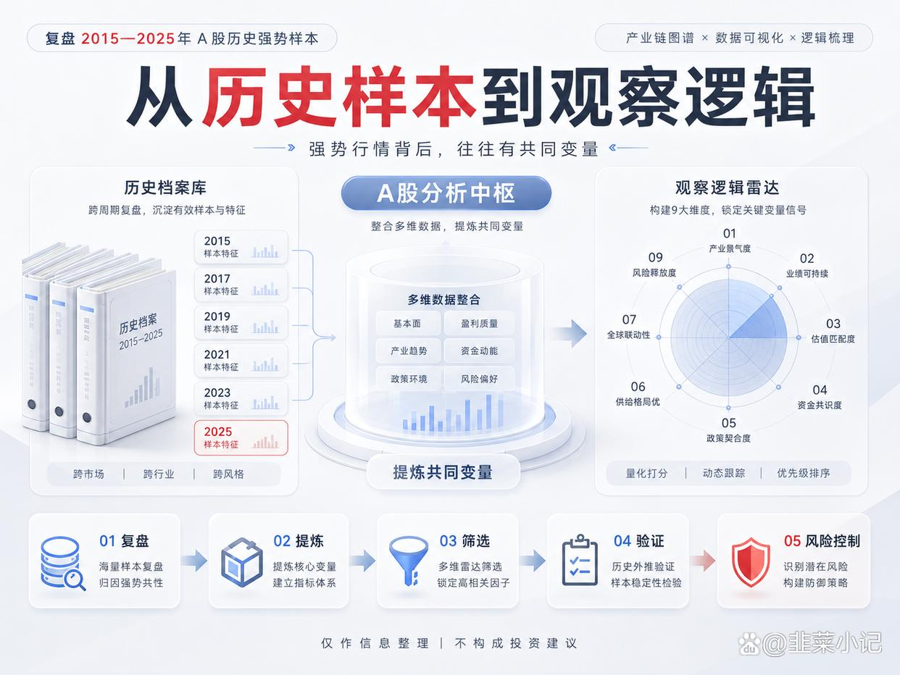
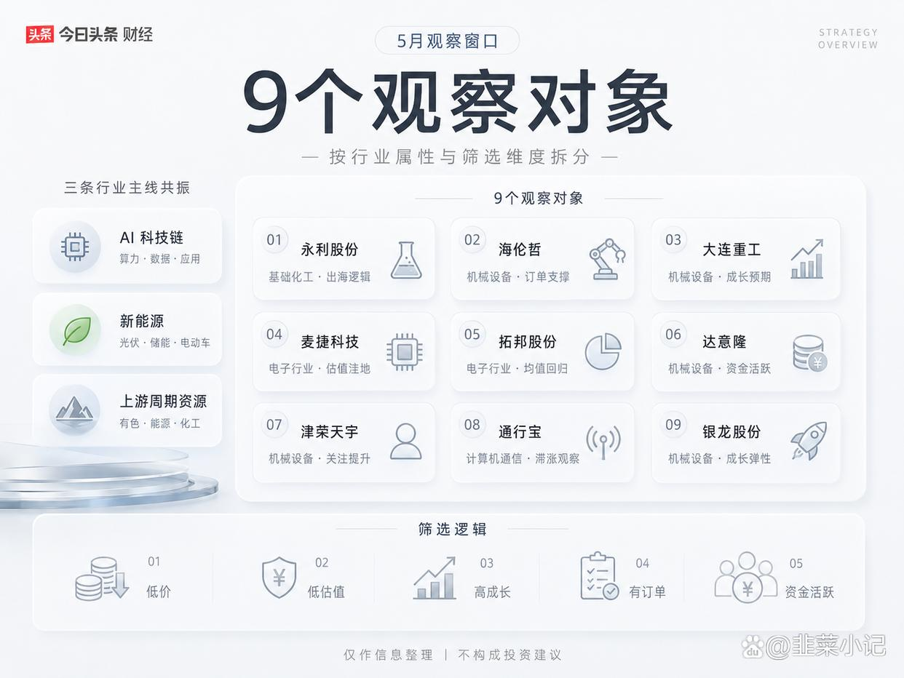
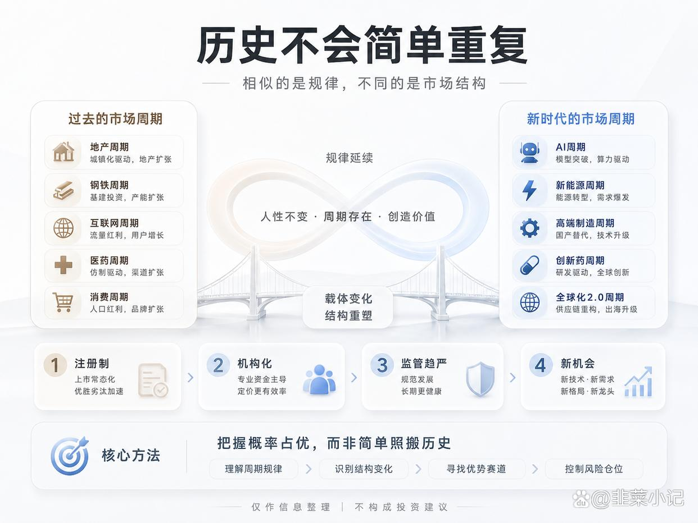
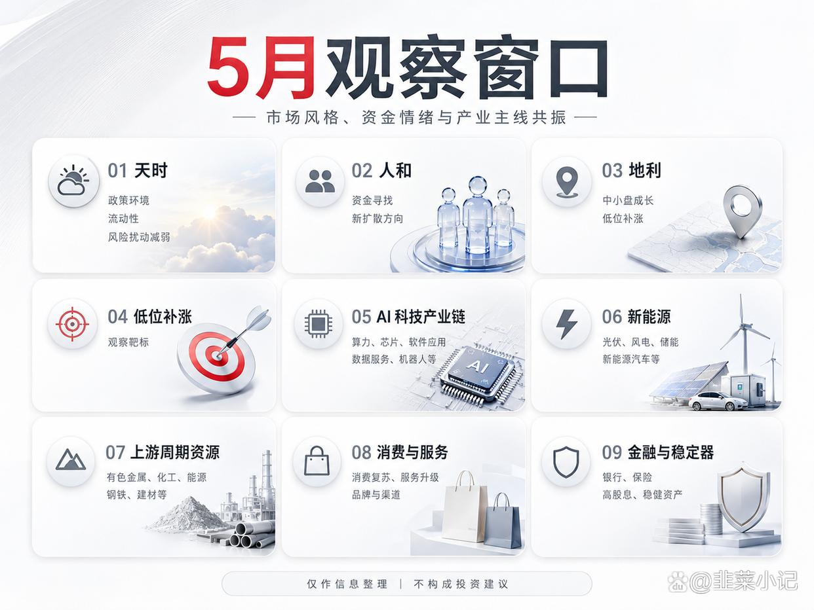
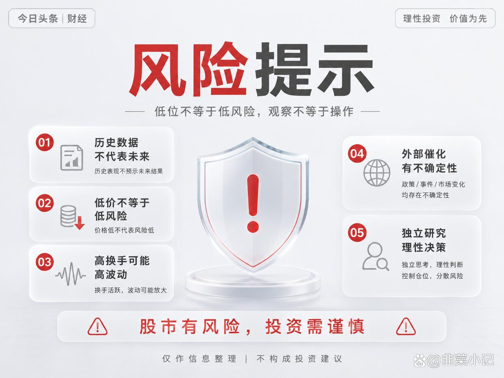

> 导语：2015年的中文在线一年暴涨17倍，2020年的英科医疗在疫情中翻了近10倍，2025年的上纬新材更是狂飙1820%……A股从来不缺神话，但神话背后，真的只是运气吗？
我花了整整一周时间，复盘了2015年至2025年这十年间所有年度10倍股和56只5倍股的成长档案，发现了一个惊人的规律——这些超级牛股的诞生，几乎遵循着同一套基因密码。更关键的是，按照这套密码去筛选，2026年5月的A股市场中，正有一批股票正在悄悄对号入座……

01十年牛股图谱：那些翻10倍的股票，到底做对了什么？
翻开A股的历史长卷，年度10倍股堪称凤毛麟角。据证券时报数据宝统计，2015年至2025年这整整11年里，以年度涨跌幅来统计，10倍股合计不足10只。但每一只的背后，都写满了一个时代的注脚。
2015年，中文在线以年涨17倍的惊人战绩横空出世。彼时正值移动互联网浪潮席卷，互联网+"概念如日中天，叠加新股属性带来的流通盘优势，以及高送转的催化，这只股票几乎集齐了当年所有热门标签。
2017年，寒锐钴业年涨12倍，核心逻辑是新能源汽车产业链的爆发带动锂电材料需求暴增。同样是新股，同样是赛道红利，历史总是惊人地相似。
2020年堪称牛股大年，一口气诞生了4只年度10倍股。万泰生物凭借HPV疫苗的核心技术屏障和新股光环翻倍；斯达半导踩中半导体国产替代的风口；英科医疗在疫情中成为最大受益者；阳光电源则依托光伏龙头的地位乘风破浪。这一年告诉我们一个道理：当行业景气度遇上时代大事件，牛股的诞生往往事半功倍。
2024年，正丹股份凭借环保新材料和扎实的业绩支撑，走出了约10倍的行情，证明了纯粹靠概念炒作的时代已经过去，业绩支撑越来越成为牛股的"硬通货"。
2025年，A股时隔4年再迎年度10倍股，上纬新材以1820%的涨幅居首，核心催化是智元机器人入主带来的具身智能概念；天普股份涨1645%，则要约收购成为关键推手。但值得注意的是，天普股份后来因股价异常波动被证监会立案调查——这给我们敲响了警钟：没有基本面支撑的暴涨，终究难以持久。
除了这些年度10倍股，A股还诞生过一批区间涨幅超10倍的妖股：暴风科技、特力A、东方通信、九安医疗……它们或靠并购重组，或靠概念炒作，或靠突发事件，在特定时间段内完成了惊人的涨幅。但仔细观察会发现，真正能够穿越周期、给投资者带来稳定回报的，还是那些有业绩、有技术、有行业逻辑支撑的品种。

02拆解牛股基因密码：十大共同特征曝光
56只5倍股、近10只10倍股，它们之间到底有什么共性？我通过五大维度深度拆解，总结出了共同特征。
新股属性堪称最强Buff。
10倍股中，新股是当之无愧的主要特征。上市初期流通盘小、没有历史套牢盘、筹码干净，这些特点让新股天然具备暴涨的体质。2015年的中文在线、2017年的寒锐钴业、2020年的万泰生物和斯达半导，无一不是新股出身。
但这里要泼一盆冷水——随着注册制全面铺开，新股稀缺性在下降，单纯靠新股标签已经不够了。2025年的上纬新材虽然也是科创板标的，但它的暴涨更多依托于智元机器人入主这一重大资本运作。未来的牛股，需要新股+"更多硬核逻辑。
核心技术屏障则是牛股的护城河。
万泰生物的HPV疫苗、斯达半导的IGBT芯片、阳光电源的光伏逆变器技术……这些牛股背后，都有难以复制的核心技术。在科技竞争日益激烈的今天，“卡脖子”技术的突破者，往往就是资本市场的宠儿。
外部催化则是牛股的点火器。
行业景气度高、资本收购利好、突发事件（如疫情）……这些外部因素就像火箭的助推器，能让一只原本普通的股票瞬间起飞。英科医疗受益于疫情，寒锐钴业受益于新能源浪潮，正丹股份受益于环保政策收紧——时势造英雄，在A股同样适用。

03从行业分布来看，TMT行业堪称牛股的主战场。
10倍股和5倍股主要集中在TMT行业（电子、计算机、传媒），机械设备、基础化工也占有相当比例。这与中国经济转型升级的大方向高度吻合——科技自立自强、制造业升级、新材料突破，正是当前国家战略的主线。
另外值得关注的是，低价、小市值、低位启动这三个特征，构成了散户的友好型投资标的。
这三点放在一起分析，因为它们指向同一个投资逻辑：牛股启动前，往往都不起眼。
数据显示，5倍股的平均收盘价普遍低于全部A股整体，2025年5倍股均价仅15.12元；超70%的十倍牛股A股市值低于50亿元；82只十倍牛股崛起前股价处于20元之下，其中17只不足5元。
这意味着什么？大牛股往往不是从茅台、宁德时代这种明星股里诞生的，而是从那些被市场忽视的角落里悄然崛起的。 对于普通投资者来说，这既是机会，也是挑战——机会在于低价股参与门槛低，挑战在于如何从众多低价股中沙里淘金。

04民企为主、地域集中、盈利过硬这三个特征也高度一致。
民营企业占比高达73.83%，浙江、江苏、广东、北京、上海合计贡献58只牛股，各年度盈利数量占比超90%，净利润同比增长数量占比超70%。这些数据说明：牛股偏爱市场化程度高的地区，偏爱机制灵活的民营企业，更偏爱那些真正赚钱、业绩持续增长的公司。 概念可以炒一时，但业绩才是牛股的压舱石。
2026年5月：天时地利人和，低位补涨窗口开启
说完了历史，我们来看当下。为什么偏偏是2026年5月？
从宏观环境来看，招商证券等多家机构近期纷纷发布策略报告，看好5月A股行情。据财联社报道，十大券商最新策略普遍认为，假期期间担忧的风险基本未发生，节后A股可能延续震荡偏强走势。华金证券更是明确指出：五月震荡偏强，中小盘成长占优。
从市场走势来看，4月A股主要股指全线收涨，创业板指涨超15%刷新十年新高，科创50指数大涨超25%，上证指数站稳4100点整数关口。一季报业绩验证期结束后，资金正在从高位抱团股转向低位补涨品种。
从资金面和市场情绪来看，流动性充裕、政策态度积极、中小盘风格占优，这些市场特征与历史上牛股频出的环境高度相似。据证券时报此前推出的2026年26只潜力股报告，机构普遍看好顺周期股、AI科创股、低估红利股和内需消费股四大方向。
更值得关注的是，AI科技产业链、新能源、上游周期资源正成为当前市场的三条主线。这与我们前面分析的牛股行业分布特征高度吻合——TMT（电子、计算机）+机械设备+基础化工，正是历史牛股最集中的领域。

05按图索骥：9只潜力股对号入座
基于以上特征分析和当前市场环境，我筛选出了以下潜力股。它们或许不会都成为10倍股，但确实在多个维度上对号入座了牛股的基因密码。
永利股份（300230）——基础化工出海先锋
牛股基因匹配度：★★★★☆
股价不到10元，PE低于18倍，属于典型的低价低估值品种。公司泰国、墨西哥工厂产能利用良好，在手订单充足，出海逻辑清晰。基础化工正是历史5倍股的重要来源行业之一，而海外产能布局则为其增添了独特的成长叙事。
海伦哲（300201）——机械设备订单饱满型
牛股基因匹配度：★★★★☆
股价不到10元，加权ROE超5%，订单饱满。机械设备行业是历史牛股的常客，而ROE是衡量企业盈利能力的重要指标。在制造业升级的大背景下，有订单、有盈利、有估值优势的海伦哲，值得重点关注。
大连重工（002204）——机械设备高成长预期
牛股基因匹配度：★★★★★
股价不到10元，净利润复合增速有望超30%，订单充足。高成长性+低价+订单支撑，这三个标签叠加在一起，几乎就是历史牛股的标准画像。如果业绩能够持续兑现，其估值修复空间值得期待。
麦捷科技（300319）——电子行业估值洼地
牛股基因匹配度：★★★★☆
股价不到15元，PE不足行业一半，2025年涨幅不到10%。电子行业是TMT的核心组成部分，也是历史牛股最集中的领域。麦捷科技的低估值+低涨幅特征，意味着它可能是资金低位补涨的潜在目标。
拓邦股份（002139）——电子行业均值回归
牛股基因匹配度：★★★★☆
股价不到15元，PE低于行业平均。与麦捷科技类似，拓邦股份也具备电子行业的赛道优势+估值偏低的双重特征。在AI硬件、智能家居等概念催化下，这类低估值电子股存在估值修复的机会。
达意隆（002209）——机械设备高换手活跃型
牛股基因匹配度：★★★☆☆
日均换手率超6%，订单充足。高换手率意味着市场关注度高、资金参与活跃，这是牛股启动前常见的技术特征之一。叠加机械设备行业的赛道优势和订单支撑，达意隆具备成为黑马的潜质。
津荣天宇（300988）——机械设备资金关注型
牛股基因匹配度：★★★☆☆
日均换手率超5%，属于资金关注度较高的品种。与达意隆类似，津荣天宇的高换手特征说明其已经进入了部分活跃资金的视野。如果后续有业绩或行业催化，股价弹性可能较大。
通行宝（301339）——计算机/通信滞涨潜力型
牛股基因匹配度：★★★★☆
2025年涨幅不到10%，在手订单充足。计算机和通信行业是TMT的重要组成部分，而通行宝的低涨幅特征意味着其可能存在补涨空间。在数字经济、智慧交通等政策催化下，这类滞涨品种有望获得资金关注。
银龙股份（603969）——机械设备高成长潜力型
#牛股特征#牛股基因匹配度：★★★★☆
净利润复合增速有望超30%。与大连重工类似，银龙股份也具备高成长性+机械设备行业属性的双重优势。如果业绩能够持续高增长，其估值提升空间值得期待。
独立思考：历史会重演，但不会简单重复。
写到这里，我必须坦诚地说：历史规律只能作为参考，不能作为投资的唯一依据。
2026年的A股与2015年、2020年相比，已经有了很多不同。注册制全面实施后，新股的稀缺性在下降；机构投资者占比提升后，市场的有效性在增强；监管趋严后，纯概念炒作的空间在收窄。
但与此同时，一些新的机会也在涌现。AI技术的快速迭代、新能源产业链的持续扩张、高端制造的国产替代……这些时代大趋势，正在孕育新的牛股土壤。
我的核心观点是：与其去猜哪只股票会成为下一个10倍股，不如去把握那些概率占优的投资机会。低价、小市值、低估值、高成长、有订单、有催化——当这些特征同时出现在一只股票身上时，即使它最终没有成为10倍股，其风险收益比也大概率是划算的。

06风险提示：#牛股#很美，但风险不可忽视
最后，我必须郑重地提醒每一位读者：
历史数据不代表未来表现。 2015-2025年的牛股特征分析，只能作为参考，不能作为投资的唯一依据。市场环境在变，监管政策在变，投资者结构也在变。
低价不等于低风险。 很多低价股之所以低价，恰恰是因为其基本面存在问题。本文筛选的标的仅供参考，不构成投资建议，投资者需要自行深入研究公司的基本面和行业前景。
高换手率可能意味着高风险。 达意隆、津荣天宇等股票日均换手率较高，虽然说明资金活跃，但也可能意味着股价波动较大，不适合风险承受能力较低的投资者。
外部催化具有不确定性。 行业景气度、政策变化、突发事件等外部因素，虽然可能推动股价上涨，但也可能产生反向作用。投资者需要对这些不确定性有充分认知。
> 本文提及的所有个股，仅供研究分析之用，不构成任何投资建议。 股市有风险，投资需谨慎。请投资者根据自身的风险承受能力和投资目标，独立做出投资决策。
结语：A股十年牛股史，写满了时代的变迁和资本的逻辑。2026年5月，当市场风格转向中小盘、当资金寻找低位补涨、当一季报业绩验证结束——或许，新的牛股正在悄然孕育。但无论如何，请记住：
投资的第一原则是不要亏钱，第二原则是永远记住第一条。
愿每一位投资者，都能在理性中把握机会，在谨慎中收获成长。
> __本文部分图片来源于网络，版权归原作者所有，如有疑问请联系删除。__ > > __免责声明：本文内容仅供参考，不构成任何投资建议，投资者据此操作，风险自担。__
免责声明
本文仅为个人研究与观点分享,基于公开资料整理,不构成任何投资建议。文中涉及个股仅作研究示例,不代表推荐。股市有风险,入市需谨慎。